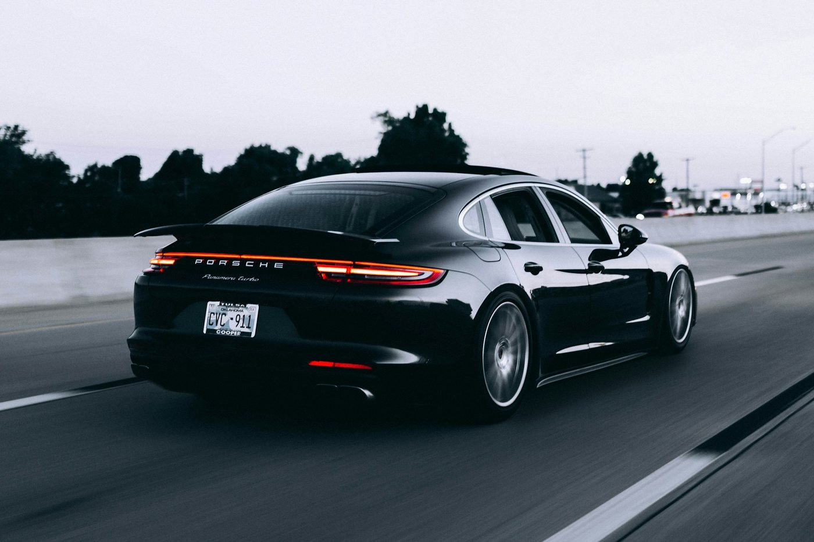
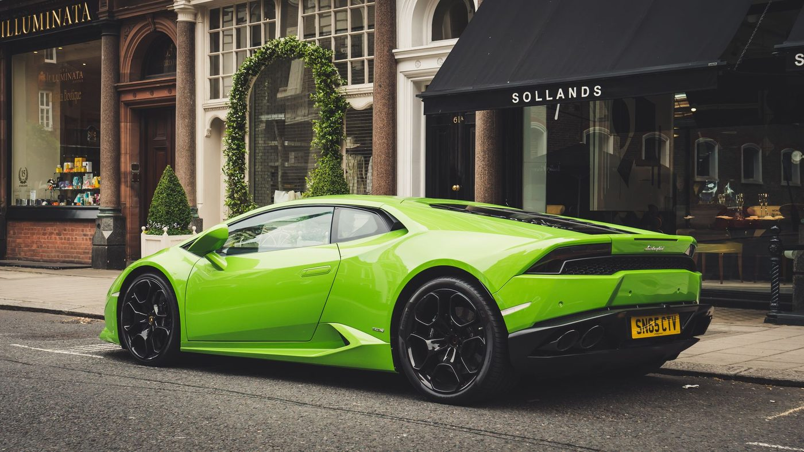
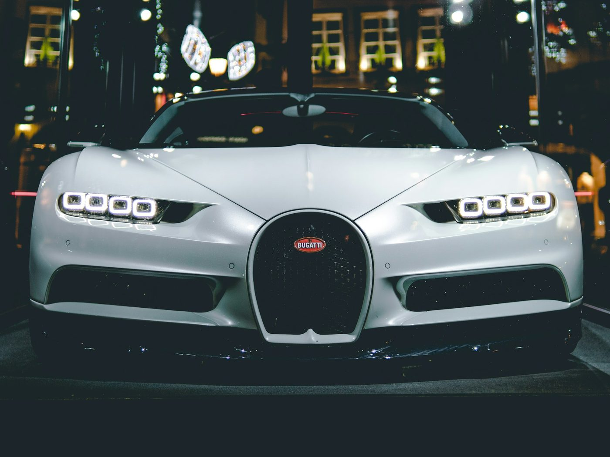

01
Essential
€189
- Hand wash and dry
- Wheels and arches
- Interior vacuum
- Glass and trim
Concept project
Detailing concept / 02
A dark, technical studio for paint, wheels and interior — designed as an independent concept, not a real workshop.
Request a slot
Packages
01
€189
02 · Popular
€349
03
€590
Example package prices for this concept. A live workshop would confirm the figure against the car and the work required.
The finish


These are example photographs of a wash in progress and a finished exterior. They are not pictures of the same vehicle. Drag the slider to compare the two states. This is a concept project, not a real detailing studio.

The method
A live Alto appointment would start with the car, the paint and what you want from the day. The work would be agreed in writing before the machine comes out. This page only shows how that story could be told.
Book
On a commissioned site this section would connect to the workshop’s real inbox or calendar. Here it only explains the idea.
Concept project — no real booking. Alto Detail is a demonstration website by WEBAUR. Package buttons and “Request a slot” only move you to this section. They do not send a request or reserve a bay.